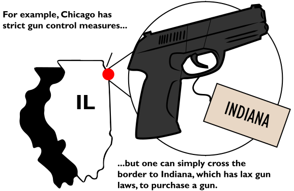

Well, in the case of mass shootings and suicide, these are often based on opportunity and happen when a gun is already availible. These kinds of people aren't likely to seek out guns on the black market.
But for others, currently, most of the "bad guys" get their guns here.
As much as 70% of the guns used in crimes in Mexico were traced back to the U.S. And the patchwork of local state and city gun control laws in the U.S. can only do so much. Because gun laws vary so much within the states, a person in a place with strict gun laws doesn't have to go far to find a place with lax regulations.
Almost 60% of guns recovered from crimes in Chicago were from out-of-state, with 19% from Indiana.
Similarly, 74% of guns used in crimes in New York come from states with lax gun laws, primarily southern states. The gun trafficking from the south up the east coast is so established it's got a name: The Iron Pipeline.
National-level gun control legislation would eliminate this interstate gun trafficking, making illegal gun sales much more difficult.
Australia, a frontier country with guns like the U.S., also had gun violence problems. Since enacting gun control measures after a mass shooting in 1996, risk of death by a gunshot has fallen by more than 50%, and suicide by gun has dropped by around 80%.